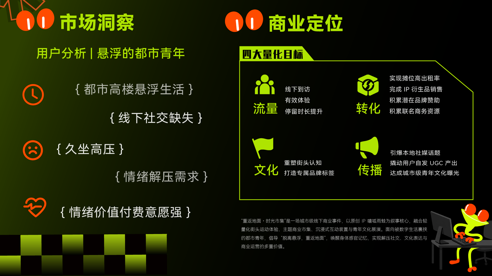
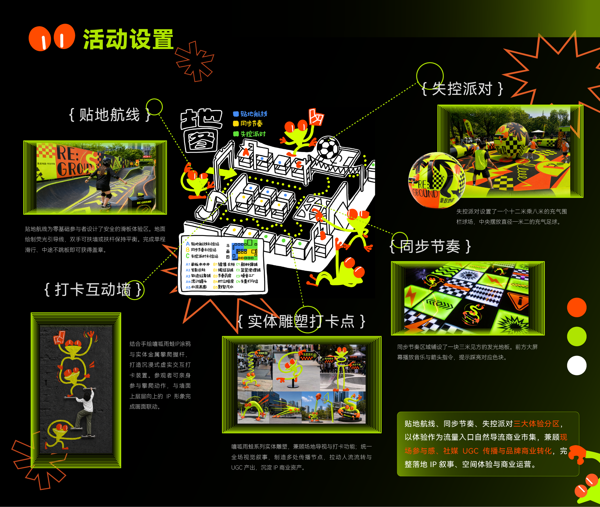
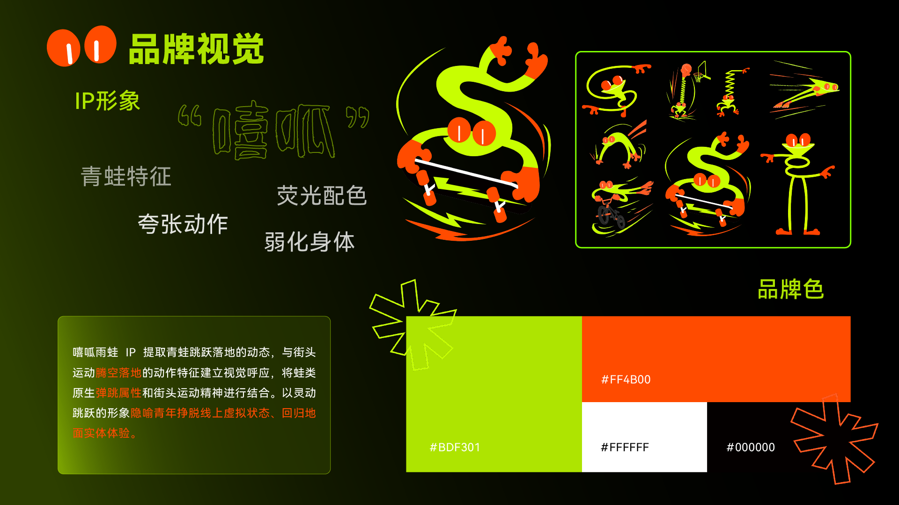
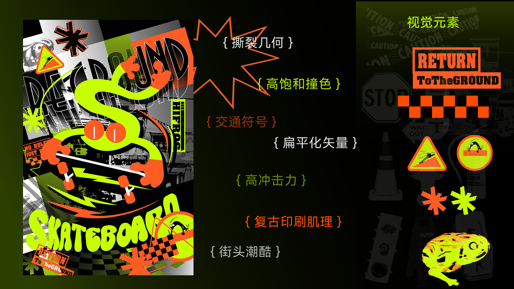
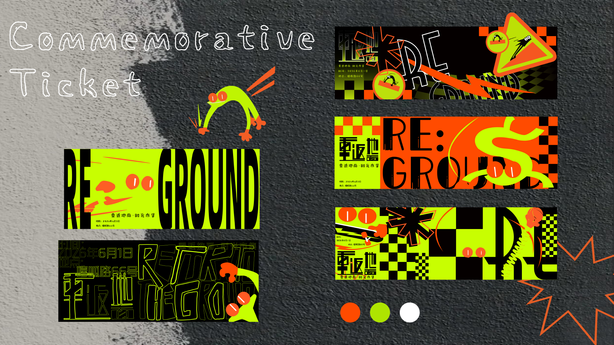
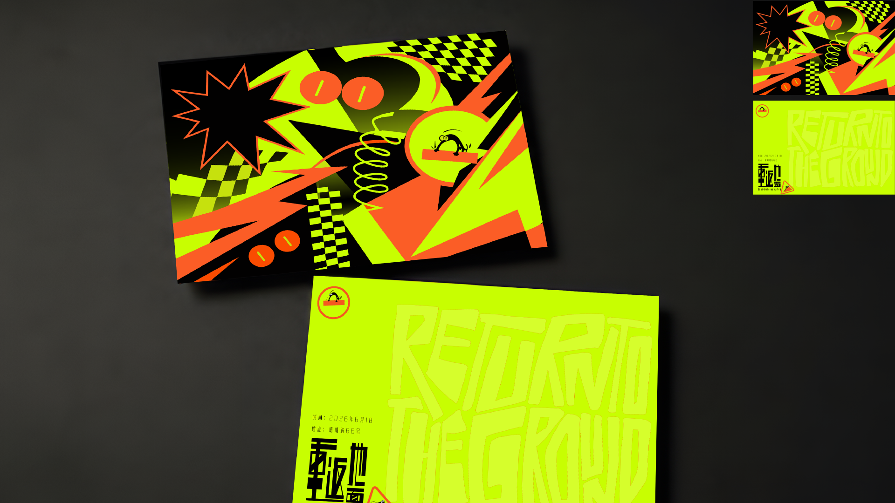
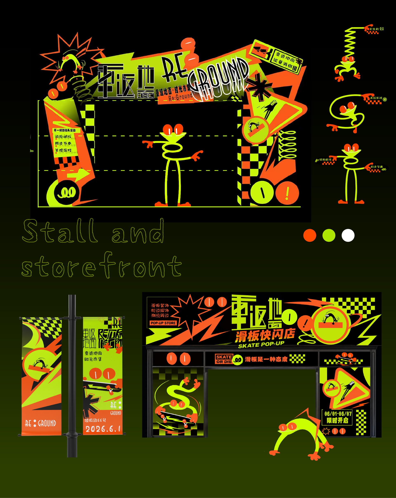
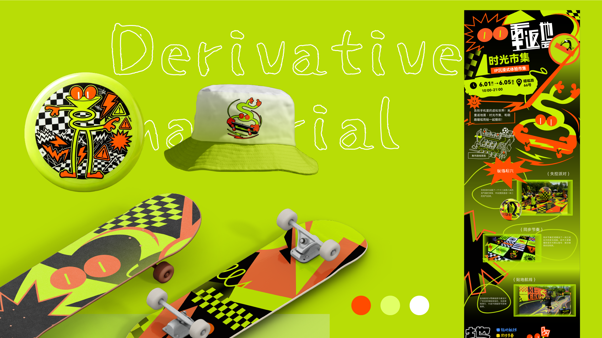
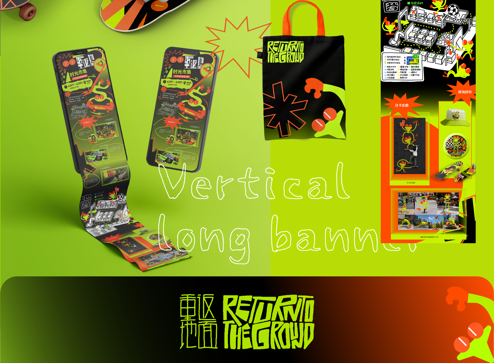

项目概览
“重返地面·时光市集”是一场面向都市青年的城市级线下商业事件。项目以原创 IP“嘻呱雨蛙”为叙事核心，融合轻量化街头运动体验、主题商业市集、沉浸式互动装置与青年文化展演，回应久坐、高压与线下社交缺失，建立兼具情绪价值、文化表达和商业运营能力的公共体验。
- 品牌主张：脱离悬浮，重返地面
- 体验设计：街头运动、市集零售、互动装置与文化展演
- 项目目标：流量转化、文化认知、社交传播与 IP 衍生
Brand & Experience Design
以街头运动唤醒身体感官，让都市青年重新连接地面、社交与自我表达。
“重返地面·时光市集”是一场面向都市青年的城市级线下商业事件。项目以原创 IP“嘻呱雨蛙”为叙事核心，融合轻量化街头运动体验、主题商业市集、沉浸式互动装置与青年文化展演，回应久坐、高压与线下社交缺失，建立兼具情绪价值、文化表达和商业运营能力的公共体验。









